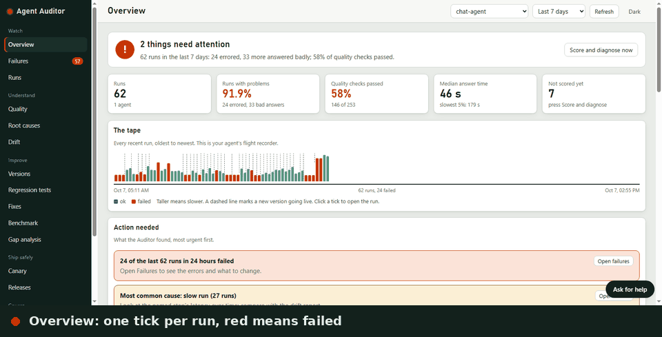
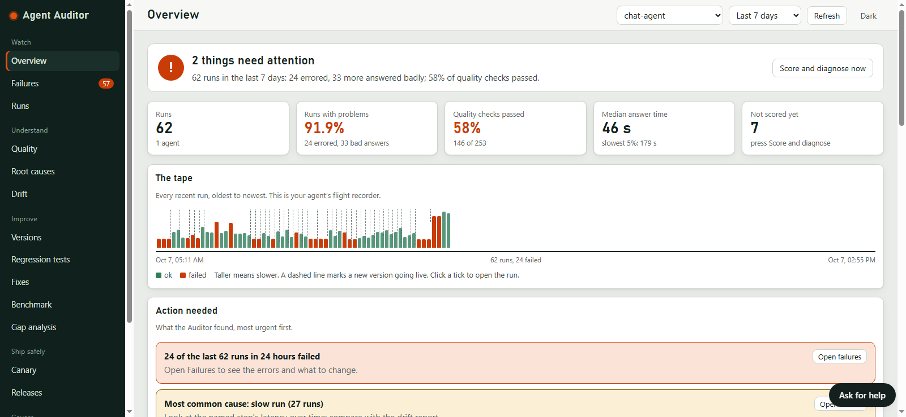
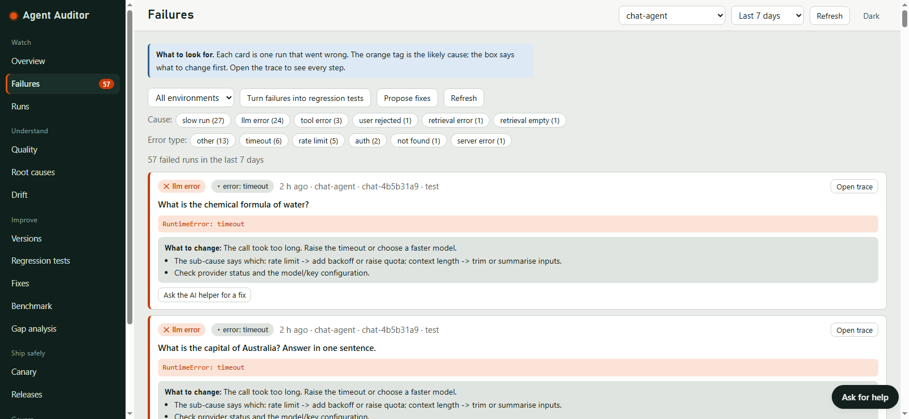
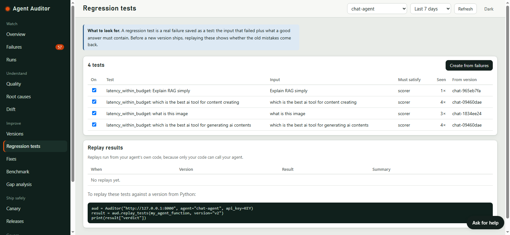
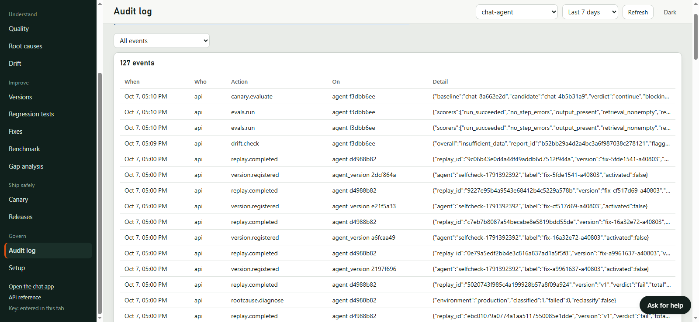

Find out why your AI agent fails, and prove the fix before you ship it.
Agent Auditor records every run of an agent, scores it, names the likely cause of each failure, and turns real failures into regression tests. A new version only goes live after a canary check and a person's approval. Open source, MIT licensed, alpha.
Tracing tools show what happened. This closes the loop.
When an agent breaks you still have to work out why, write the test by hand, change something and hope. Each step below is a page in the dashboard and a call in the API.
Trace
Every run and its steps, from a small Python SDK.
Score
Built-in checks that need no API key: errors, speed, empty answers, grounding.
Explain
A likely cause per failure, and which change probably brought it in.
Remember
One click turns a failed run into a regression test.
Propose
Fix candidates, replayed on every saved test.
Canary
Compare a candidate with the live version on real runs.
Release
A different person approves. Roll back with a reason. Everything is logged.
It held back a slower model, then promoted it two days later.
Two real models answered the same 24 questions. Neither failed. The candidate was just slower, and the canary said so. The same pair later gave a smaller gap and a different verdict, which is the most useful thing I learned.
Median answer time
Slowest 5% (95th percentile)
That was on 9 November, 3.16x slower. Two days later the same pair gave 1.78x and the default policy promoted it, with warnings. I have since run a rollback (with a planted fault) and a promote on real models too. Read all three runs, including what did not work.
A dashboard that explains itself.
Fifteen pages in plain HTML, served by the API. No build step and no CDN. Every chart has a table view, and "Ask for help" answers from a built-in guide without a key.

See the problem at a glance
The Overview gives a health verdict and one tick per run, so a bad hour shows up as a red patch.


Each failure has a cause and a next step
Every card names the likely cause and says what to change first. Open the trace to see each step.


Failures become tests
A bad run turns into a regression test that is replayed against every new version.


Every decision is on the record
Promotions, rollbacks and refusals are written to an audit log, so you can say who approved what and when.


Where it fits, and where it does not.
Tools such as Langfuse, LangSmith and Arize Phoenix are mature, widely used and have large teams behind them. Agent Auditor is one person's alpha project. Pick it for one reason: it covers the steps after tracing.
Pick Agent Auditor if you want
- A failed run turned into a regression test with one click
- A named likely cause for every failure, not only a trace
- A canary and an approval gate before a new version goes live
- Something small you can read, run offline and change
Pick a bigger platform if you need
- Production scale, hosted service or a support contract
- Many integrations and SDKs beyond Python
- Real user accounts and roles
- Checks on whether an answer is factually right
Run it in two minutes.
Needs Python 3.11 or newer. The core runs offline with no API key. Or click through the live demo first.
pip install agent-auditor agent-auditor demo # opens the dashboard with sample data; nothing is saved
- From source:
git clonethe repository, thenpip install -e . - On Windows, one command starts the Auditor and the chat demo together:
powershell -ExecutionPolicy Bypass -File .\run-all.ps1 - Keys are optional. They are only used by the demo chat app, the AI helper and AI-written fixes.
- With your own agent, add the SDK decorators to any Python agent. LangGraph is supported.
- Docker runs the API, a worker and PostgreSQL.
- Read the docs
What it does not do yet.
Alpha software, run on one developer's machine and not proven under production load.
- It checks symptoms, not facts. Errors, speed and empty answers are caught. A wrong answer that looks well formed is not.
- Fixes are proposals. A person registers a candidate, the tests replay on it, a canary compares it and someone else approves it.
- Approver names are self-asserted behind one shared API key. Real authentication is on the roadmap.
- Promotion deploys nothing. It marks a version active.
- Replay needs an agent that can be called again with the stored inputs.
- SQLite is the tested backend. PostgreSQL is experimental.
Help build it.
It is early, so a small contribution goes a long way. If it saved you an afternoon, a star helps other people find it.
- Try it on your own agent and tell us where it broke. Open an issue
- Build from the roadmap: one-click "apply and verify" for fixes, real user authentication, fact-checking scorers, a green PostgreSQL job, a PyPI package. See the roadmap
- Pick a small task: good first issues
- Ask a question or share an idea in Discussions